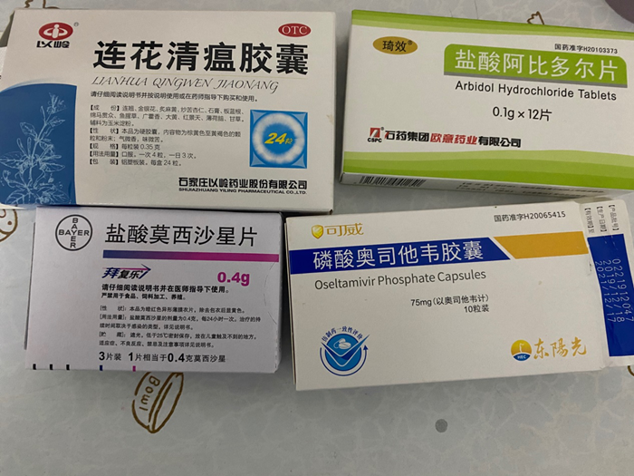

武汉医生患病后自己诊治、隔离：我们的麻醉师插管没有护目镜，就用泳镜
原文链接 备份链接 希望情况尽快能得到改善 武汉医院现在防护服短缺，一线医护人员不敢吃饭、喝水、上厕所，因为医用防护服是一次性的，一旦脱下就要换新的。 本刊记者/周群峰 摄 近日来，网上有关于武汉市医务人员被感染的消息出现。武汉市某三甲医 …
武汉急诊科护士被感染 除夕夜独自居家隔离未告诉亲人病情丨武汉肺炎亲历
2020-01-25 22:47 作者：晏国文 曹学平 来源：中国经营网
本报记者 晏国文 曹学平 北京报道
“护士不好当，急诊的护士更不好当，武汉的急诊护士更加不好当。都是拿命在干，真害怕有一天忽然倒下。”1月16日凌晨3﹕20，武汉一大型三甲医院急诊科护士晓嘉（应被采访者要求为化名）在自己的微博上写下这段文字。
几天之后，武汉新型冠状病毒疫情蔓延，被感染的患者数量突增。晓嘉作为一名急诊科的护士，也没有幸免。
1月23日，晓嘉写道：“大家好，我没有任何症状，但是今天查CT，不幸被查出了那个可怕的肺炎。”晓嘉今年25岁，但是她的粉丝都称她为小姐姐。晓嘉以一位年轻的医务工作者和一名患者的身份，与网友交流患病与治疗情况，并且科普一些健康防护的常识。
1月25日，作为曾深入新型冠状病毒疫情防控一线并不幸被感染的真实个体，晓嘉告诉《中国经营报》记者，自己科室的护士同事被确诊感染新型冠状病毒之后，自己经过检查也发现呈冠状病毒阳性。因为病灶较小，病情较轻，医生建议晓嘉居家隔离治疗，开了莲花清瘟胶囊、盐酸阿比多尔片、盐酸莫西沙星片、磷酸奥司他韦胶囊等4种药品。另外，晓嘉还需要定期去复查。
因为疫情初期并没有得到足够的重视，晓嘉所在科室较晚才开始全员穿上防护服。晓嘉认为，或许就是在与患者的接触过程中自己染上了疾病。
这个春节，晓嘉没有回老家，而是留在武汉自己独居的公寓宿舍内。因为不想让家人担心，晓嘉自始至终都没有将被感染的事情告诉自己的家人。“我们科室太忙了，原本就回不去，并且现在已经‘封城’了。跟他们说了他们还担心，所以就不说。”晓嘉说道。
1月24日，农历除夕，原本该与家人团聚的晓嘉继续在自己的隔离治疗中。
晓嘉在自己的微博中写道：“昨晚半夜我的咽拭子核酸检测结果显示冠状病毒阳性。算是确诊，今早去找了科室医生，由于我的病变范围较小，到目前为止没什么临床症状，建议我居家隔离，避免住院交叉感染，吃口服药，多喝开水。网友说得很对，一个乐观的心态很重要，我一定可以战胜病毒的。今天虽然是年三十，但病毒不放假，防护这件事不能掉以轻心。过完年后，春天可能就不远了……因为这个事，生活和微博上有好多人给我加油关心，我的心很暖，消极失落想想这些心情（情绪）一下子就好了（没了）。国难当前，同舟共济。一起加油！”

图片来源：受访者供图
以下是晓嘉的部分自述：
我现在已经不在医院了。因为我的病情比较轻，医生建议我在家隔离。
过年期间，门诊没了，但是急诊科照常开。因此急诊科过年期间一般都很忙，所以就没有专门的排休息时间。如果想回家的话可以和别人换班。换班之后会有两三天的休息时间。
我们科室太忙了，原本就回不去，并且现在已经“封城”了。跟他们说了他们还担心，所以就不说。
我现在还在隔离期，还要按时吃药，定期去复查。
我没有什么症状。因为当时，我们科室收到了一些病人，接触比较多。我们老师（比我年资更高的护士同事）有人感觉不舒服，查到确实得了这个病。然后我们自己也查，感觉这样放心一点。但是一查发现，自己也被感染了。
先查CT，发现有点问题，病变就像权威资料描述的那样，然后又查了鼻咽拭子，结果呈阳性。
如果我们发现患者检测结果有问题的话，就会更加注意。病人如果病情比较重的话就直接转到重症监护室了，不是很严重的就在我们这边治疗。
医院医护人员最近一周开始都要穿上防护服。防护服穿得比较晚。
为什么我会得这个病，因为我们这边有一些高度疑似，但是还没有确诊的病人，会在我们这边待着。我们也会防护，但是刚开始的时候，那种病人数量还算少数，我们没有那么高度地重视。可能那时候不小心就被传染了。
确诊之后，医生说我的病灶比较小，居家隔离更适合我，因为我住处也没有其他人，因此就在家里隔离治疗。治疗费用不用自费。
我觉得，我平时也是个爱运动的人，自认为抵抗力是比较强的。最近一段自己的特殊时期，自己特别注意按时用餐，按时作息，不能着凉感冒。但是我也很纳闷，怎么就被传染了。
因为最初没有确诊，我们也不知道进来的病人是不是新型冠状病毒的患者，我们的防护手段还是像接待普通病人的防护手段一样，所以就有很大的风险。
那时候没有穿防护服，就相当于赤手空拳在战斗。全副武装戴护目镜穿上厚重安全的防护服，是最近这一周才开始的。
防护服是连体的，包括帽子、鞋套都是连在一起的。衣服前面是一个拉链，会粘在一起，如果再打开的话，就不粘了。所以，我们穿这个防护服没有办法上厕所，并且口罩戴得特别严，并且还有护目镜压着鼻子。有的老师（护士）鼻子都被护目镜压红了。
因为防护服是一次性的，现在这些物资是比较缺乏的，一天一套。中午吃饭的时候，也可以换下来，下午继续穿。
因为医院有暖气的。穿这么厚重封闭的防护服，身上往往都是汗水。护目镜里全都是水雾，有时候都看不清东西。身上会感觉很热。
我觉得现在有两个问题：第一，物资方面，口罩、防护服等用品应该是比较短缺的，因为人太多，使用量太大了。另外，物资配送过程可能也是难题。微博上有人说想寄些东西到我们医院，如果要寄的话，需要有医院的证明，因为武汉现在“封城”了，一般人也不让进。
第二，现在大家对病情有点疑病的感觉。部分来医院的人不一定真有事，但是非要到医院来检查。恐慌的心理作用下，本来可能没有事情，最终造成医院门诊量增加。这对他自身也不好。医院情况比较复杂，患病人数较多，在目前这种情况下，不能随便去医院。
现在，我只希望多一些技术手段，诊断疾病。患者确诊后，积极治疗，早日康复。
让我很感动一点是，很多不相识的人送了很多鲜花、食物到医院。但是他们并不是武汉人，大都是外地人，匿名送过来。
作为一名护士，这些陌生人的小举动我挺感动，感觉暖心，让人感觉不是一个人在战斗。
（编辑：曹学平 校对：颜京宁）
原文链接 备份链接 希望情况尽快能得到改善 武汉医院现在防护服短缺，一线医护人员不敢吃饭、喝水、上厕所，因为医用防护服是一次性的，一旦脱下就要换新的。 本刊记者/周群峰 摄 近日来，网上有关于武汉市医务人员被感染的消息出现。武汉市某三甲医 …
原文链接 备份链接 Original 陈鑫 马乔 等 界面新闻 界面新闻 About Feature 界面新闻是中国具有影响力的原创财经新媒体，只服务于独立思考的人群 Yesterday 图片来源：海洛创意 记者： …
原文链接 备份链接 武汉140公里以外：一天隔离50人，除夕夜接诊护士没有防护服丨武汉肺炎亲历 2020-01-25 22:47 作者：李静 来源：中国经营网 本报记者 李静 湖北广水报道 一天之内隔离50人，这对于广水市第一人民医院院办 …
原文链接 备份链接 二月二，龙抬头。春耕应该从今天开始吧？但不知道，今年此日，地里有没有劳作的农人。继续晴天，很暖和，有一种大太阳能把病毒晒死的感觉。院里月季都在抽枝发芽，我几乎没有怎么打理它们，但它们依然旺盛生长。 平时经常吃仟吉系列 …
原文链接 备份链接 二月二，龙抬头。春耕应该从今天开始吧？但不知道，今年此日，地里有没有劳作的农人。继续晴天，很暖和，有一种大太阳能把病毒晒死的感觉。院里月季都在抽枝发芽，我几乎没有怎么打理它们，但它们依然旺盛生长。 平时经常吃仟吉系列 …